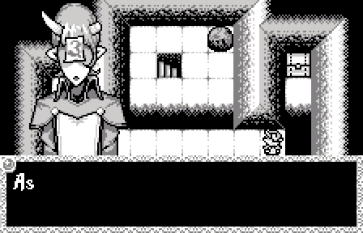
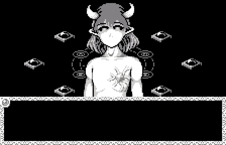

Void Stranger の感想 / Review of Void Stranger
このゲームの会話時に表示されるキャラクターグラフィックには口パクアニメーションがついています。
口パクのあるゲームは珍しくはありません。しかしこのゲームのものはクオリティが高く、自然で、
キャラクターごとに動かし方も差別化されています。
The character graphics that appear during conversations in this game have animated mouth movements.
While it is not uncommon for video games to have lip-synching,
the ones in this game is high quality, natural, and differentiated by the movement of the characters.

しかし口パクをしないキャラクターが存在します。
But, there is character who do not have mouth movements.

それまでの口パクアニメーションは、最後に登場するこのキャラクターの、喋れない という特徴を強調しています。
Mouth animation up to that point emphasized the character's inability to speak in the last scene.
そして、それらを積み重ねられた上で 'Can you hear me now?' というメッセージが投げられます。
And with those in mind, the message 'Can you hear me now?' is thrown.
このゲームの良いところは、上記のような優れた演出が他にもたくさんあるところです。
聞くことができるでしょうか。
The good thing about this video game is that there are many other great touches like the above.
Can we hear them?